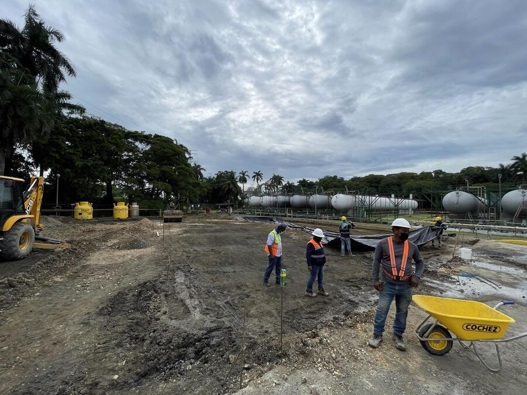
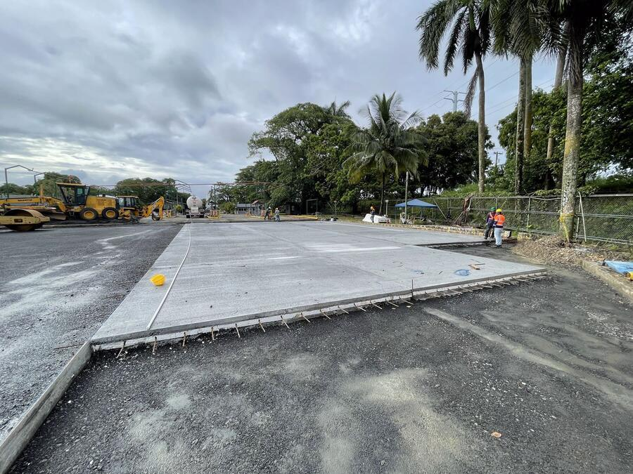

Obra en planta
Pavimentar el patio de una terminal de combustible sin detener el despacho
Respuesta corta: se divide el patio en sectores y se vacía por paños alternos, manteniendo siempre una ruta libre de entrada y salida para las cisternas. Cada sector se interviene bajo permiso de trabajo diario y se devuelve a tránsito cuando el concreto alcanza la resistencia especificada, no cuando deja de verse húmedo. El despacho no se detiene: se reprograma por sector.
¿Por qué no se cierra el patio completo?
Una terminal factura por despacho y opera contra programación de entregas. Cerrar el patio completo no retrasa una obra, retrasa una cadena de distribución. En nuestra obra en una terminal de combustible el patio se dividió en cinco sectores y la instalación nunca dejó de despachar: la obra tomó nueve meses, y esa duración la fijó el ritmo que permitía la operación, no el tamaño de la cuadrilla.
Esto cambia el orden de la planificación. Primero se define con operaciones qué se puede cerrar y cuándo; después se dimensiona el equipo. Planificar al revés produce cronogramas que no se cumplen.

¿Cómo se divide el patio en sectores?
Un sector bien definido cumple cuatro condiciones a la vez:
- Deja operativa una ruta completa de ingreso, carga y salida.
- No interviene dos islas de carga contiguas de forma simultánea.
- Se puede vaciar completo en una jornada, sin junta fría no prevista.
- Tiene acceso para el camión mezclador sin pisar concreto fresco o en curado.
Sobre esa sectorización se vacía en tablero de ajedrez: un paño sí, uno no, y los intermedios después. Además de controlar la retracción, el patrón alterno garantiza que el curado de un paño nunca bloquee el acceso al siguiente.
¿Qué permisos exige trabajar dentro de la terminal?
Son requisitos del operador, no del municipio, y se tramitan a diario:
- Inducción de seguridad de la instalación para todo el personal que ingresa, incluidos subcontratistas y choferes de mixer.
- Permiso de trabajo diario, firmado por el operador antes de iniciar cada jornada.
- Permiso de trabajo en caliente para toda actividad que genere chispa —el aserrado de juntas la genera— con medición previa de gases y vigía de fuego durante la labor.
- Equipo apto para área clasificada. La clasificación eléctrica según NFPA 30 y API RP 500 define qué equipo puede entrar a cada zona; los motores de combustión requieren matachispas.
- Plan de respuesta a derrames y extintores disponibles en el frente de trabajo.
El corte de juntas merece atención aparte: tiene una ventana de tiempo corta que no se puede posponer, y a la vez requiere permiso de trabajo en caliente.
¿Cuál es la secuencia constructiva por sector?
- Demarcación y protección del sector; desvío de tránsito acordado con operaciones.
- Demolición y retiro de la carpeta existente.
- Conformación de subrasante y compactación, con control de densidad por capa.
- Subbase granular compactada, cuando el diseño la contempla.
- Formaleta, acero de refuerzo o fibra, y pasadores en juntas si aplican.
- Vaciado, vibrado y acabado superficial con la textura especificada.
- Corte de juntas de contracción dentro de la ventana de tiempo.
- Curado continuo durante el período especificado.
- Sellado de juntas y entrega del sector a tránsito.

¿Cuándo puede volver a pasar una cisterna?
Aquí está el error más caro y más frecuente. En un pavimento el parámetro que gobierna no es solo la resistencia a compresión, es el módulo de rotura: el concreto de una losa trabaja a flexión bajo la carga del eje, no a compresión pura. Por eso la apertura a tránsito se define contra ensayo y especificación, no contra calendario.
En la terminal que ilustra este artículo la especificación se escribió precisamente así: losa de 20 cm con concreto de módulo de rotura 650 psi —es decir, especificado a flexión y no a compresión—, y los sectores se abrieron al tránsito de cisternas a los 28 días, conforme a norma. Con concreto convencional ese es el orden de magnitud habitual. Con un diseño de alta resistencia inicial puede adelantarse a 3 o 7 días, que suele ser la vía razonable cuando la operación no admite sectores cerrados por un mes. Abrir antes de tiempo produce fisuras en esquinas y bordes que aparecen semanas después y se pagan dos veces.
¿Qué sale mal con más frecuencia?
- Aserrar tarde. La losa fisura sola antes de que se corte la junta. Es un problema de logística de permisos, no de equipo.
- Subrasante mal compactada en los bordes del paño, justo donde la carga del eje genera el mayor esfuerzo.
- Agua añadida a la mezcla en sitio para mejorar la trabajabilidad. Cada litro extra baja la resistencia final.
- Tránsito prematuro autorizado por presión operativa.
- Cambiar la secuencia de sectores sin avisar a operaciones, que es la vía más rápida a perder el permiso de trabajo.
Datos de la obra
- Sectores de trabajo
- 5
- Duración total
- 9 meses
- Interrupción del despacho
- ninguna
- Espesor de losa
- 20 cm
- Resistencia especificada
- MR 650 psi (flexión)
- Apertura a tránsito
- 28 días
- Rendimiento de vaciado
- 80–120 m²/jornada
Cifras de una obra ejecutada por ADM4D en una terminal de combustible en Panamá.
Preguntas frecuentes
¿Se puede pavimentar una terminal de combustible sin cerrarla?
Sí. El patio se divide en sectores y se vacía por paños alternos, dejando siempre una ruta de entrada y salida para las cisternas. Cada sector se interviene dentro de una ventana acordada con operaciones y se devuelve a tránsito cuando el concreto alcanza la resistencia especificada.
¿Cuándo puede volver a pasar una cisterna sobre el pavimento nuevo?
Por resistencia, no por calendario. En pavimentos industriales el parámetro de diseño es el módulo de rotura, no solo la resistencia a compresión. Con concreto convencional la apertura a tránsito pesado se da alrededor de los 28 días; con diseños de alta resistencia inicial puede adelantarse a 3 o 7 días, siempre contra ensayo.
¿Por qué concreto y no asfalto en un patio de cisternas?
Porque el asfalto es un ligante bituminoso y los derrames de hidrocarburo lo ablandan y lo disgregan. Además, las cisternas estacionan y maniobran sobre el mismo punto, lo que impone carga sostenida y esfuerzo cortante que el concreto hidráulico resiste mejor.
¿Qué permisos exige trabajar dentro de una terminal de combustible?
Inducción de seguridad de la instalación para todo el personal, permiso de trabajo diario firmado por el operador, y permiso de trabajo en caliente con medición previa de gases y vigía de fuego para cualquier actividad que genere chispa, como el aserrado de juntas. Los equipos de combustión requieren matachispas y en áreas clasificadas según NFPA 30 y API RP 500 el equipo eléctrico debe ser apto para esa clasificación.
Vea la obra completa de la que salen estas fotografías.
Ver el proyecto